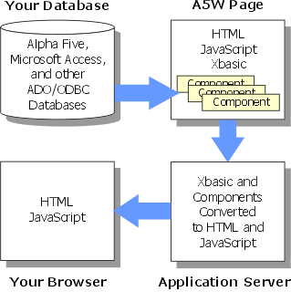
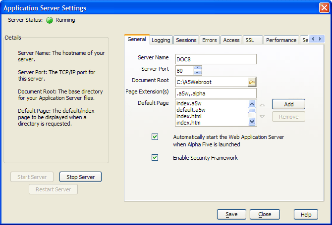
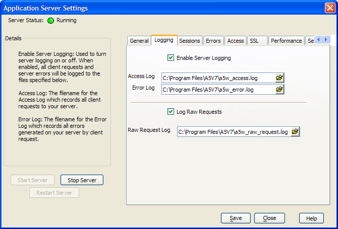
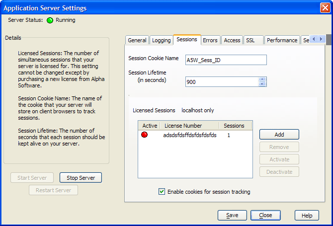
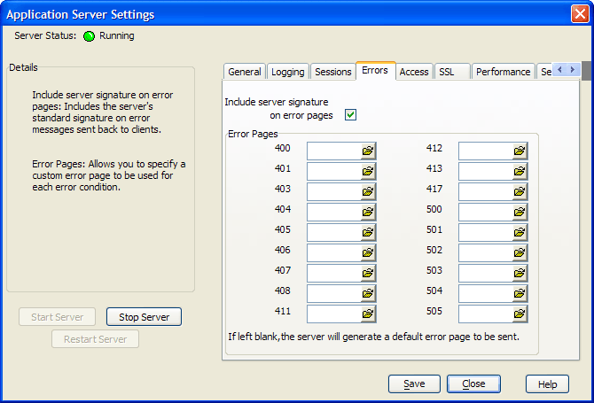
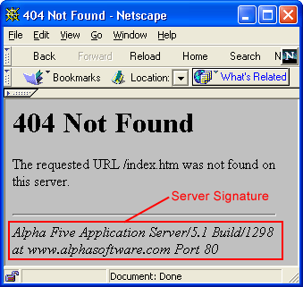
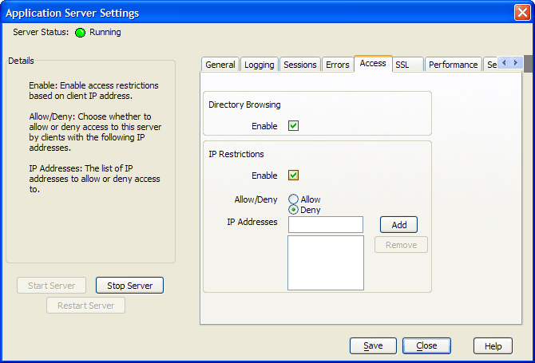
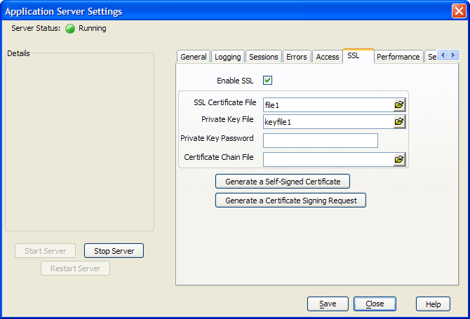
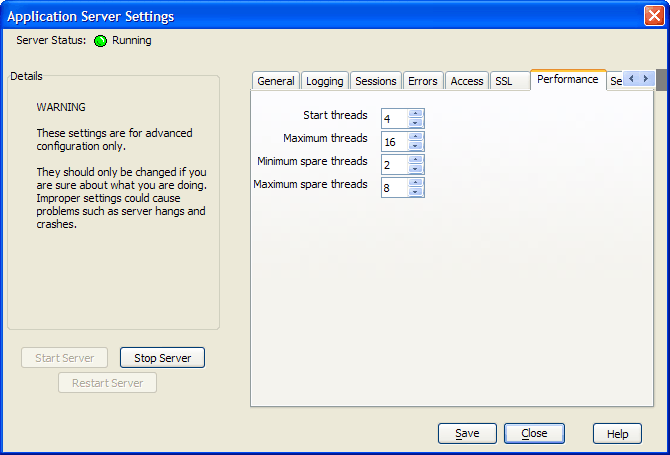
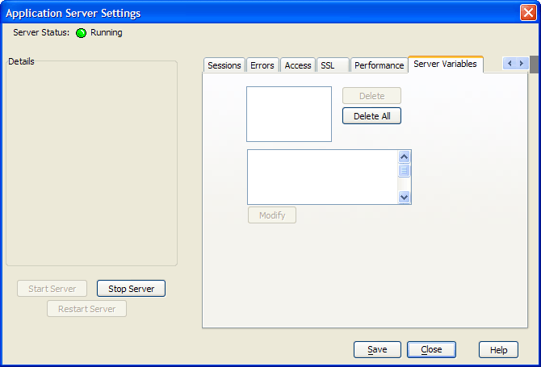

Configuring and Running the Server
Overview
The Application Server delivers web pages containing web components to your Internet users.

You use the Web Component Builder to build components (which know how to retrieve and display your data). Then you use the HTML Editor to place the components into HTML pages (with the .A5W extension). Finally, the Application Server delivers standard HTML and JavaScript pages to your Internet connected users.
 Note : At least one
user must be logged onto the Windows computer hosting the Application
Server for it to run.
Note : At least one
user must be logged onto the Windows computer hosting the Application
Server for it to run.
Starting and Stopping the Application Server
To start the Application Server.
Display the Control Panel.
Select Tools > Application Server to display the General tab of the Application Server Settings dialog.
Click Start Server.
To stop the Application Server.
Display the Control Panel.
Select Tools > Application Server to display the General tab of the Application Server Settings dialog.
Click Stop Server.
There are two ways to install the Application Server, with and without the Alpha Five database. When installed without Alpha Five, you will not be able to use any functions or scripts that are stored in an Alpha Five .ADB database file. In order to use these functions or scripts, they need to be either embedded in .A5W pages or compiled into .AEX files.
The Application Server's control panel is accessed by going to Tools > Web Server (or Web > Web Server ). This is where the server is configured and controlled. Starting and stopping the server is as simple as using the Start Server and Stop Server buttons on this dialog box or on the System toolbar. Any changes made while the server is running will not take effect until you stop and then restart your server.
The General tab controls the basic server settings used by the Application Server. Picture
{kind=link}

Server Name is the host name of your server. This is the name used by the web clients to access your server.
Server Port is the TCP/IP port this server will listen on for web requests. When using HTTP, port 80 is the default port for receiving requests from all standard web browsers. When using HTTPS (SSL), the standard port is 443. If there is already a web server running on the computer where you are using the Application Server, you will need to change either that server or the Application Server to use an inactive port. You can run HTTPS on port 80 if you would like, but you will have to use a URL such as https://server:80/page.a5w.
 Note : The Application
Server will support the use of only one
port at a time.
Note : The Application
Server will support the use of only one
port at a time.
Document Root (or local webroot) is the base directory for your Application Server files. Only files placed within this directory or a sub directory will be accessible through the server.
Page Extension is a comma delimited list of the filename extensions used to identify pages that should be interpreted as Xbasic pages. All other files will simply be passed back to the web browser without being executed.
Default Page allows you to specify multiple default pages. The default page is the page that is displayed if the user simply requests a directory, such as www.yourserver.com/documentation. The Application Server searches for these pages in the order in which they are listed. With the default setting of index.a5w and index.html, the server will look in the specified directory for a file named index.a5w. If one exists, it will be sent back. If it does not, the server will look for index.html. If that exists, it will be sent back. If not, the server sends an error message back to the browser. If Directory_Browsing is enabled, instead of the server sending back an error after it has checked for all of the default pages, it sends back a listing of all files in the requested directory. If no default page is specified and Directory Browsing is not enabled, the server will return a 403 Forbidden message.
Automatically start the Application Server when Alpha Five is launched
Enable Security Framework must be enabled before the Application Server will enforce page security.
The Logging tab controls the logging behavior of the Application Server.

Enable Server Logging is used to turn server logging on or off. When enabled, all client requests and server errors will be logged to the files specified below.
Access Log is the filename for the Access Log which records all client requests to your server. This log file will be in the Common Logfile Format which is used by most other web servers.
Error Log is the filename for the Error Log which records all errors generated on your server by client requests. This log can be helpful in troubleshooting application errors.
Log Raw Requests , when enabled, causes the server to log the complete client request to the specified file. This information can be helpful while debugging an application but it is recommended that this is turned off in a production environment in order to maximize server performance.
Raw Request Log is the filename for the Raw Requests Log.
The Sessions tab controls the session behavior of the Application Server.

Session Cookie Name is the name of the cookie that your server will store on client browsers to track sessions.
Session Lifetime is the number of seconds that each session should be kept alive on your server. If a client request is not received within this time period, that client session will expire and any session variables will be removed from memory. The minimum value for this setting is 300 seconds (5 minutes).
Licensed Sessions shows the number of simultaneous sessions that your server is licensed for. This setting cannot be changed except by purchasing a new license.
The Errors tab controls how the Application Server should handle errors.

Include server signature on error pages toggles whether or not to include the server's standard signature on error messages sent back to clients. Below is an example of an error page with the server signature highlighted.
Click the
 icon next to any of the entries in the Error Pages region to navigate to and select
a custom error page for this type of error.
icon next to any of the entries in the Error Pages region to navigate to and select
a custom error page for this type of error.

This is where directory browsing can be enabled/disabled and IP restrictions can be created.

Directory Browsing Enable enables and disables directory browsing by client users.
IP Restrictions Enable enables or disables restrictions based on client user IP addresses.
Allow/Deny allows you to either create a list of IP addresses that you will accept or a list that you will not accept.
IP Addresses contains the list of IP addresses that you wish to accept or refuse.
The Application Server optionally supports SSL for secure, encrypted transmissions. This support is particularly valuable in e-commerce applications.
The Application Server responds on the port
specified on the General tab of the Control
Panel. If you use port 81 and enable SSL, your URL would be https://
 Note : If you have
SSL enabled, the Application Server will not respond to any http://
URL, no matter what number port you are using.
Note : If you have
SSL enabled, the Application Server will not respond to any http://
URL, no matter what number port you are using.

A certificate enables a web server to tell its web clients its name and its public key, to be used for encrypted (SSL) communications. There are two types of certificates.
Self-signed - good for testing and internal private applications, but not suitable for external public applications
Issued by trusted companies, such as Thawte and Verisign - good for public applications
To get a certificate from a trusted company.
Generate a Certificate Signing Request (CSR) for the server where the certificate will be installed. Be sure to keep the private key created as part of the CSR generation. It will be needed when you receive your certificate.
Send this information to one of the trusted companies. Typically, you will paste it into a web form, but the methods vary.
When you receive your certificate:
Select the Enable SSL checkbox.
Click
to navigate to and select the SSL Certificate
File.Click
to navigate to and select the Private
Key File.Enter your password into the Private Key Password control. This is the password chosen during CSR generation.
The Performance tab contains a number of settings to control the threads used by the Application Server. This are set to reasonable defaults. Improperly setting these values could actually reduce the performance of the server. The settings on this tab should be considered "Advanced" settings and should not be modified by a user unless they are sure what they are doing.
The number of running server threads determines how many incoming client requests can be processed simultaneously. If a client request is received by the server but there is not a thread available to process it (all running threads are busy handling other requests), a new thread is created. Creating a new thread to process a request adds considerable overhead and is very slow compared to using a ready-and-waiting thread to process the request. For this reason, it is advantageous to have spare threads running on the server.
While having more running threads means that the server will answer requests more quickly, each running thread takes up memory, even if it is sitting idle waiting for an incoming request. So having too many spare threads will hurt overall server performance.
The Application Server continuously monitors the number of running threads along with the idle or busy status of each. Using the settings on this tab, you can control how the server manages the threads available for client requests.

Start threads is the number of server threads to create when the server is first started.
Maximum threads is the absolute maximum number of threads that the server should create. Allowing the server to create too many threads will consume excessive memory. The threshold where performance begins to degrade will vary widely based on your operating system and hardware specifications.
Minimum spare threads is the minimum number of idle threads that should be available at all times. If Start threads was set to 4 and this was set to 2, as soon as the server was busy processing 3 requests there would only be one spare thread so the server would create a new spare thread, as long as the new number of threads would not exceed Maximum threads.
Maximum spare threads is the maximum number of idle threads that should be available at any time. If there are more than this number of spare threads, they will be ended until the spare thread count is below this number.
The Server Variables tab is only visible when the server is running. This tab shows all of the "server variables" and allows them to be modified or deleted.

Supported By
Alpha Five Version 6 and Above
Limitations
Web publishing applications only.
See Also